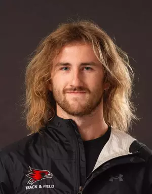

My name is Sullivan.
I have a Bachelors of Computer Science from Southeast Missouri State University with minors in Mathematics, Cybersecurity, and Data Science.
I represented my university on the track & field team as a pole vaulter. I was also a piano instructor and STEM tutor in my spare time.
I am interested in general research of 'low-level' training dynamics of neural networks. Please reach out if you are interested in more information at
sullivanpgleason@gmail.com.
View my resume
here.
View my two publications
here and
here.
You can also find some of my other small sites
here.
My name is Sullivan.
I have a Bachelors of Computer Science from Southeast Missouri State University with minors in Mathematics, Cybersecurity, and Data Science.
I represented my university on the track & field team as a pole vaulter, where I was a 3x conference champion, school record holder, and NCAA DI All American, Honorable Mention.
I was also a piano instructor and STEM tutor in my spare time.
I am interested in general research of 'low-level' training dynamics of neural networks. Please reach out if you are interested in more information at
sullivanpgleason@gmail.com
View my resume
here.
View my two publications
here and
here.